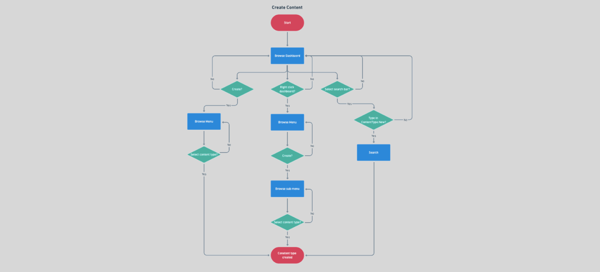
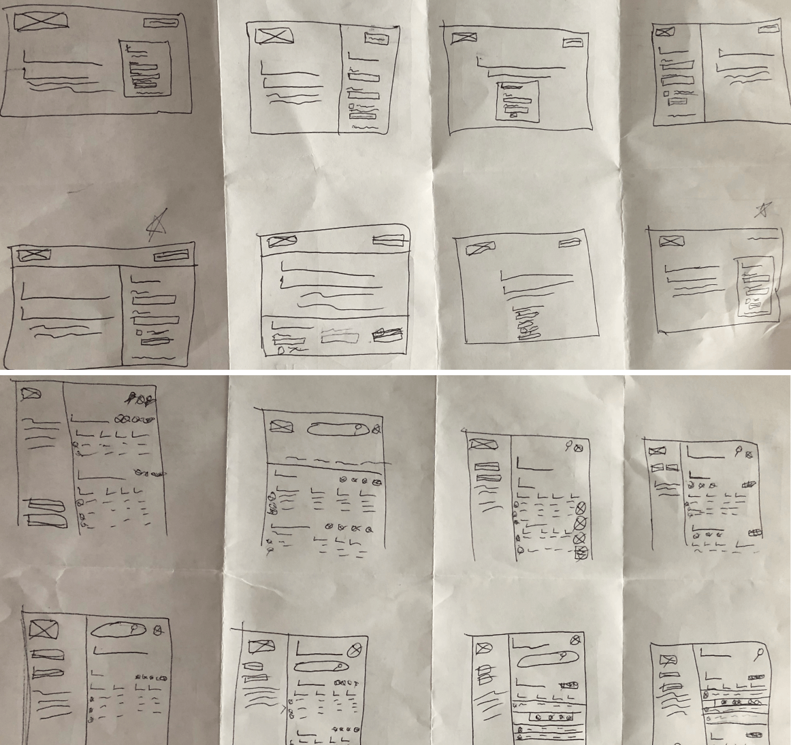
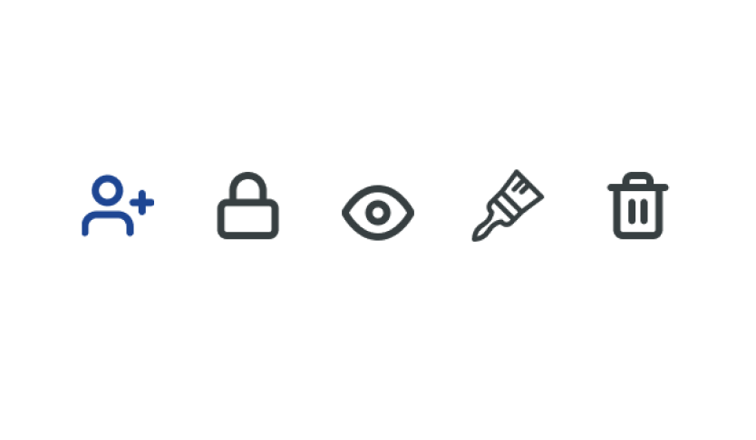
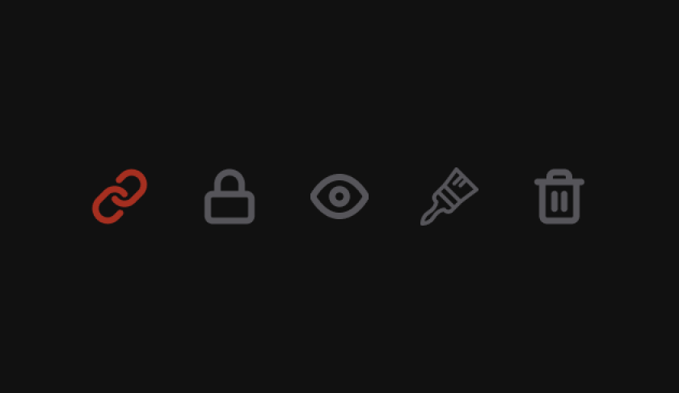

CORE Case Study
The Basics
Summary
CORE is a cloud file manager service dedicated to empowering the filmmaker. It aims to be the homebase for the filmmaker’s journey. With CORE the artist has the ability to create, store and share their filmmaking files.
What I did
- UX Research
- Information Architecture
- Branding & Identity Creation
- Visual Design
- Prototyping & Testing
Tools
- Google Surveys
- Google Docs
- Whimsical
- Figma
- Zoom
- Usability Hub
Duration
- 5 weeks
Deliverables
- User Survey
- Competitive Analysis
- User Personas
- User Stories
- User flows
- Content Strategy
- Wireframes (low and high fi)
- Usability Testing
- Style Guide
- Logo Design
- Preference Testing
- Prototyping
Problem
In the beginning of the project I was given a brief by a hypothetical client. In this brief the client laid out a desire to create a new player in the cloud service industry. They outlined features that they wanted the application to include. However the problem was with an over saturated market was there enough room for a new competitor in the space? If so, what would that look like? Did users even want or need the features the client listed?
Solution
Through the UX process I found out that there was room for a new cloud service as long as it was for a specific niche. That’s how CORE became a filmmaking platform.
Also through my research I found out the key features users needed to create a minimal viable product. These key features were creating an account, logging into an account, creating a file, uploading a file and sharing a file. Through the design I made sure to highlight these features.
Discovery and Research
User Survey
Using Google surveys I was able to collect data on a number of respondents. I found out that...
Mainly used their cloud service on desktop
Want a cloud service dedicated to a niche
Use the cloud for school
Use the cloud for work
I also found out that the top 3 most used and valued features by users were creating content, uploading a file and sharing a file.
Competitive Analysis
Using Google docs, I did a competitive analysis on three major cloud services - Google Drive, Evernote and Pinterst. Through the analysis I found that these services made it really easy to do their main story. On Google Drive and Evernote, users can easily make content. On Pinterest, users can easily save content.
However, I found that google drive’s content is very general. So users that need a specific niche type file would be out of luck. Evernote can only create one type of file - notes. In addition Evernote can’t upload files (Users can only attach a file to a note). Then with Pinterest, they don’t even give users the ability to create any type of content.
User Personas
Considering that the data said that users wanted a niche for a cloud service, this was the point of the project where I selected film as the market to tackle.
In an effort to humanize all the data that was collected, I built user personas.
Emma Collins
- Age: 20
- Occupation: Student
- Location: North Carolina, USA
- Gender: Female
- Status: Single
- Role: Up and coming film student
Goals
- Upload files
- Share files
- Collaborate on files in real time
Frustrations
- No ability to create film specific files
- Can’t password protect files
- Slow upload times
- Lack of storage
Xavier Dillard
- Age: 32
- Occupation: Assistant Director
- Location: New York, USA
- Gender: Male
- Status: Single
- Role: Type A assistant director
Goals
- Create documents and spreadsheets
- Organize files into groups
- Sync files between platforms
Frustrations
- No ability to color code files
- No ability to change display
- Can’t preview files.
A lot of the information provided in the user personas were based on data collected on the survey. The demographic questions informed the occupation, age, gender, relationship status of Emma and Xavier.
However, one thing to note is that Xavier was originally a production manager. It wasn’t till I got deeper into the project that I had to come back and change Xavier to an assistant director. I didn’t realize that assistant directors, not producers had more of the day-to-day administrative tasks that I was thinking of.
As for the goals and frustrations, while some of these didn’t become the MVPs of the project, they were all based on current frustrations and potential features respondents wished they had.
Information Architecture
User Stories
In order to create the user stories, I jumped into the mind of each user persona. I thought about the things they needed to do their job. While both had different prioritization levels assigned to each task, I eventually came to the conclusion that both groups needed to…
- Create an account
- Log into an account
- Create a document
- Share a file
- Upload a file
Something to note is that I originally had locking a file and color coding a file as part of the MVPs instead of creating/logging into an account. It wasn’t till I got to the wireframing stage where I realized that those were task users needed! I think that I was so focused on the data and the users' wants/frustrations that I didn’t consider the obvious. So I had to go back to add these two tasks in the user stories and user flows.
User Flows
I created a number of user flows based on the user stories I came up with. For speed purposes, I first started with pencil and paper. When I found ones that I felt were extremely intuitive, I used Whimsical to transfer them onto a digital platform.
I focused on the main stories. At first it was to create a document, share a file, upload a file, color code a file and lock a file. Creating and logging into an account was added later.
I also decided in order to not fall victim to scope creep, I would only add additional user flows that were closely aligned with the main stories.
Something else I tried to focus on was flexibility. Take the story creating a content for example. To complete this task users can do it through the create button, they could do it by right clicking or they could do it though the search bar. I did this because I felt like it was a task that was commonly completed in different ways by different users. I wanted to cater to that.
Sketching
I did multiple sketches of CORE's different screens. I used the crazy 8 method to force me to think outside the box. After, I selected the sketches that I felt highlighted the high priority task the best. I then continued to iterate on them.
Digital wireframes
Using Figma I turned my sketches into digital wireframes. Through the process I started to think of more specific ways to highlight the MVPs.

On the Homepage I wanted to highlight the create an account story. In order to do this I made the create an account section the biggest element on the page. In addition, I placed it along the z-pattern that users' eyes take when they first land on a web page.

On the dashboard, my goal was to highlight the upload and create a file stories. To do this , I created contrast between their buttons and the rest of the page. I made the buttons circular while the rest of the dashboard’s elements were geometric. In addition, I highlighted the buttons even more by surrounding them with negative space.
First Usability Testing
I did a usability test on two users. One of the tests was in person and the other was done remotely through Zoom. I tested them on 5 tasks. (Looking back at it I should have tested on just the high priority task but I made the mistake of focusing on the users frustrations instead of the MVPS.)
- Create an account
- Create a document
- Create a project
- Locking a file
- Sharing a file
Discovery #1

The login process was not as seamless as I thought. Users had a hard time identifying if they put anything into the input fields. This caused delays, hesitation and confusion.
Discovery #2

I found that the create menu was a bit confusing for users. They were getting lost. Especially when the sub menu popped up.
Discovery #3
Users were confused by which icon was used to share a file. It was like I could see their mind work through the process of elimination.

Branding
Discovering a Name
After a bit of brainstorming I came up with the name CORE. I had the idea that this was going to be the filmmakers homebase. This was going to be the CORE of their film project.
Creating an Identity
When doing research for other cloud services I found that they had a very 9-5 feeling. They felt very corporate.
“Every artist has a small revolution inside of them.”
I wanted CORE to feel like it was for indie filmmakers. I wanted it to be rebellious, individualistic, modern and artistic. I really wanted it to feel like an alternative brand to the Google Drives and the Evernotes of the world.
Finding an Image
Part of this project was creating a visual identity for CORE. I had to come up with a logo that matched the branding I imagined. The logo went through many iterations. It started with sketching.
When I found a few that I felt had potential I transferred them to Figma and started iterating.

Eventually I settled on the design above. It was not what I expected. But I feel like it works.
The circles give CORE a sleek look while also forming a cloud. Each circle has smaller circles inside them. The inner circles continue to shrink till they reach their CORE. This highlights the idea that CORE is the center of the filmmaker’s journey. I also gave the circles a slight gradient. This gives the logo a modern feeling. On top of that, the gradient serves an additional purpose. It gives the circles the effect of coming out of the background. This is supposed to represent the artist breaking away from the crowd.
Style Guide
I created a style guide to encapsulate the visual identity of CORE. Through this I go over the various visual elements in detail.
Color palette
Black
The shades of black were selected because it represented mystery, elegance and sleekness. But it also served as an alternative to all the light UI’s that other cloud services had.
Red
Red was selected because it represented boldness, courageousness and passion. In addition, it also represented love and energy. This felt perfect for the artist.
Font
San serif fonts were selected to give the platform a modern feel while also being very legible.

Visual Design
First Iteration
After discovering CORE's identity, I designed the product's first high fidelity mockups. With these mockups I not only aimed to add CORE's new brand but I set out to attempt to fix the problems I discovered from the previous usability test.
Fix #1
In order to fix the login process I changed the color of active input fields. Now whenever the user puts their information in, The input fields turn white. In addition, I changed the example text of the inactive fields. At first, I thought the original text would bring character to the project but it just ended up being confusing for the users.
Fix #2

A major change that I made when transitioning from the original wireframes to the high fidelity mockups was the shapes of elements. When color was added to the project all the elements felt too loud. It was as if they were shouting for attention.
To alleviate that feeling, I changed most of the elements on the dashboard to have softer, rounded edges. This caused me (in order to keep the contrast) to change the create and upload buttons to be more geometric.
Another reason I changed the shapes had to do with branding. It felt counterproductive to the brand to have circular buttons. One of the reasons for having a dark UI is that it’s a bit edgy and different. Having circular buttons felt contradictory to that image.
Fix #3
I added hover states in the create menu and submenu options. I did this so users wouldn’t get lost while they are interacting with the menu items.
Fix #4
I replaced CORE’s original share icon. I used the link icon instead because of feedback I got from the usability test. A user suggested that a link icon would probably increase recognizability.
Preference Test and Second Iteration
Using usability hub I tested users on 3 different elements.
- Different hero images.
- Different signup/button copy.
- Different ways to style the file container in the dashboard.
Through this process I found out that respondents reinforced all my original choices except for the hero image. The picture of CORE’s homepage above shows the image that users responded to the most.
Final Iteration
Second usability test
At this stage of the project I finally had a good grasp on what the high priority tasks were. I now knew the full scope of this project. During this second usability test I not only wanted to test if the visuals matched up with the brand but I also wanted to test those high priority tasks.
Using zoom, I tested 3 users remotely. I tested them on 5 tasks that had to do with the project's MVPs. These tasks were...
- Creating an account
- Logging into an account
- Creating a document
- Uploading a file
- Sharing a file
Issue and solution #1
Most of the given tasks seemed to be very intuitive to the users. However, there was still some hesitancy when sharing a file. It was faster than before but users still had trouble identifying the share icon right away. So I replaced the link icon to an envelope icon to attempt to fix this issue.
Issue and solution #2
On the homepage, users couldn’t tell what service CORE provided. They especially got confused when reading the copy. I originally thought it was obvious what CORE did. In order to combat this newly found issue I replaced the copy to something that had a little more detail.
Issue and solution #3

I was given the feedback that the login page was too dark. Users said that there was nothing distinguishable about it. They thought that there was nothing on the page that made them think of CORE. At first I thought this would give it a sense of mystery and minimalism but instead it made it dull. To combat this I added a background image which now I feel speaks CORE’s brand.
Issue and solution #4
Another piece of feedback I was given was that CORE’s dashboard felt a little lackluster. They said that it was okay but nothing jumped off the page. I agreed with the comment. If there was enough time and budget I could have added custom icons and fonts. I think that it would have really helped to make this project feel more original.
However, I did add a gradient on the nav bar. I feel like this made a huge difference. It helped the project pop more. In addition it also increased the visibility of some of CORE’s high priority stories (create and upload).
Reflection
Closing thoughts
My assumptions
Going into this project I had doubts about there being enough room for another player in the cloud service. But through my research I found out that there was. In order for a new cloud service to exist, they would have to be dedicated to a specific niche.
Also through various degrees of testing I found out that this product works. In the final usability test, users seem to go through most of the high priority task seamlessly.
What surprised me
What really surprised me was how much small tweaks can change the complexion of a project. By doing two small things - adding a background image to the login page and adding a gradient to the navbar of the dashboard - the project came alive!
If I had more time...
If I was given more time I would have loved to have added dedicated and completely custom fonts and icons. I feel like it would have given the project an even more individualistic look.
In addition, I would have loved to have created another user survey specifically for filmmakers. I think this would have given me greater insight. It would have helped me cater the project to the specific market even more.
I also would have liked to have had an additional usability test. I think it would have helped to see if the changes I made created a difference. Especially when users are sharing a file.
What I learned
This project taught me a lot. It taught me that the UX process is fluid. You don’t just finish one deliverable and go to the next. Yes, the last deliverable will inform the next. But the next will also inform the last. It’s ever changing. They all inform each other.
I also learned that a project is never finished. Even though there are changes that I wish I could have made I’m still proud of this project. I feel I could walk away confident that this is a suitable solution to the client’s brief.